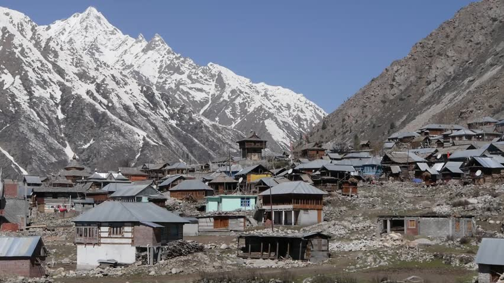

Introduction
Lulled by the sweet folk songs of the Kinneri women, the vale of Kinnaur provides a calm ambience to all tourists, young and old. While the youthful and the daring harness nature's hilltops with their trekking expeditions, the more laidback traveler can savor the delight of the tranquil mountains amidst the rich verdure. Kinnaur, with its colorful and hospitable population, can be an absolute delight for the ones who admire the highlanders. This land of fairytales and fantasies has a spectacular terrain of lush green valleys, orchards, vineyards snow-clad peaks and cold desert mountains.
Location
Kinnaur is a border district, located in the southeastern part of the northern state of Himachal Pradesh. It is about 250 km from the capital Shimla and is situated on National Highway No. 22, which is also called the Hindustan-Tibet Road. The landscape of the area varies from the lush green orchards of the Sangla Valley to the stark magnificence of the Hangrang Valley. The massive snow-clad ranges provide a regal dignity to the area. There are about 77 villages in the district and Kalpa is one of the biggest of them. There are almost no urban centers. Two turbulent rivers race through Kinnaur-the Sutlej and the Spiti. The slopes are covered with thick forests, while the basins hold orchards, fields and picturesque hamlets. Kinnaur holds three of world's grandest mountain ranges-the Zanskar, the Greater Himalaya, and the Dhauladhar-and the famous 4,573-meter-high Kinner Kailash mountain by whose side is the seventy-nine foot vertical rock formation that resembles a Shivalinga and changes color as the day passes
History
Before India's independence, Kinnaur formed part of the erstwhile Bhushhar state. After independence, Kinnaur formed the Chini Tehsil of Mahasu district. As part of the reorganization of border areas, the Kinnaur district was formed on May 1, 1960, to enable speedy development of this area. Kinnaur is home to some of lndia's oldest traditions and legends. The Pandava brothers are said to have spent several years of their exile in these tracts- an episode from the epic Mahabharata. Ancient texts have gone to the extent of placing the people of Kinnaur-the Kinners-as halfway between men and gods. The highland tribes here are simple, hard working, honest and very welcoming to the tourists.
Fair And Festivals
There are many local fairs and festivals like the Ladarcha fair (July-August) in Kaza, Tribal Fair (August) in Keylong, Tribal Festival (October-November) in Rekongpeo, Phulaich Festival (August-October) in Kastiar.
Best Time to Vist
It is very cold during the winters here but the summers are pleasant. Being a dry zone, there is no monsoon here. Therefore, the ideal time to visit Kinnaur is from May to October.
How to Reach
BY AIR - The nearest airport to Kinnaur is Jubbarhatti airport at Shimla, which is located at a distance of 274 km from here. This airport is connected to important destinations like Kullu, Chandigarh and Delhi. From the airport, Kinnaur is accessible through private cabs and taxis. BY RAIL - The nearest railway station to Kinnaur is Shimla railway station. This railway station is around 244 km away. From outside the station, either hire a private cab or opt for bus service to reach Kinnaur. BY ROAD - Regular state-run and private buses ply between Kinnaur and other important cities of the state such as Rampur and Shimla. Kinnaur is accessible from Lahual and Spiti, and Chandigarh. The facility is hiring a private cab is also available.
Tourist Attractions
The beautiful valley along Bhaba River is an important tourist spot. It is a link road to the valley, which originates at Wangtu. It has a reservoir lake and alpine meadows and is famous for the trek route to Pin Valley in Spiti. Karchham (1,899 m), located at the confluence of the Sutlej and Baspar rivers, is the start of the picturesque Baspar Valley of which Sangla is the largest settlement. Sangla is 18 km from Karchham and is perched at a height of 2880 meters. A link road that goes off the National Highway into the Baspar valley offers an enchanting spot at every curve. There are saffron fields, orchards, and higher up, as the road climbs the steep, there are lush green alpine meadows. Rakchham is situated on the bank of Baspa River, at an altitude of 2900 meters, and is famous for its scenic beauty. It is about 13 km from Sangla on the way to Chitkul. The last and the highest village in this valley, Chitkul, 28 km from Sangla, is noted for its alpine meadows and snowscapes. It has a rest house and is placed at an altitude of 3450 meters above sea level. Powari, 70 km from Rampur, is the last major stop, on the Hindustan-Tibet Road. Located 240 km from Shimla and 7 km from Powari, Rechong Peo is the headquarters of the Kinnaur district. It is placed at an altitude of 2670 meters, has a rest house and hotels, and offers a fine view of the Kinner Kailash. At a distance of 3 km from Rechong Peo, Kothi has a temple dedicated to the Goddess Chandika Devi. Set against a backdrop of mountains and groves of deodar, the temple has a special architectural style and fine sculpture. At a distance of 14 km from Powari is Kalpa, the main village of the district. It is at an altitude of 2768 meters. Across the river, facing Kalpa, is the majestic spectacle of the Kinner Kailash range Riba is at a distance of 18 km from Powari and is known for its vineyards and local wine "Angoori' made from grapes. It is at an altitude of 2745 meters above sea level. About 26 km from Powari is Jhangi, where the inner border is located. From this point the famous Kinner Kailash Parikrama Trek starts via Morang, Thangi and Kunocharang villages and entering Chitkul village in Sangla Valley. Perched at a height of 2837 meters is Puh, which has a rest house and hotel facilities. One can see lush green fields, orchards of apricot vineyards and groves of almond trees, en route Puh. Namgya is the closest village from the Indo-China border, and the Shipki La Pass is just 13 km from this village. The fine Buddhist Monastery of Tashigang Gompa is at the confluence of the Sutlej and Spiti rivers. It is accessible from Nangya, after a little diversion from Khob, on the National Highway 22. Another monastery, Tilasang, is close to Koa, 12 km short of Yangthang and has facilities for visitors to stay. At a height of 3662 meters is Nako, a little off the National Highway 22 along a link road just short of Yangthang. It is a scenic village and the largest in the desolate Hangrang valley.